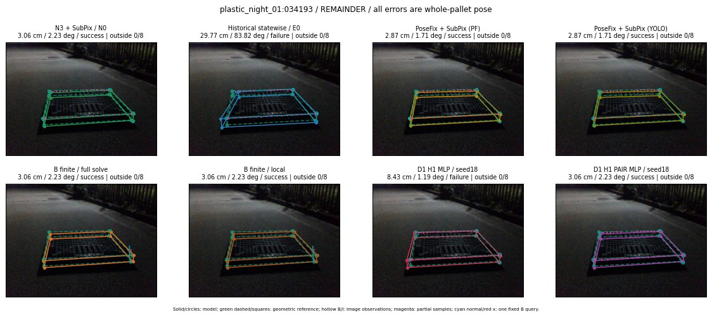

Whole-pallet pose errors; reference is a fixed geometric annotation, not certified physical GT.

Scores are uncalibrated logits. N0 retention is a numerical pose alias; it differs from H0 none or B fallback. B/I and profiles in baseline/B panels are original observations; L panels use new D1 observations. Only one deterministic supported B query is shown in a thumbnail; full support counts are below. Grey privacy rectangles edit the display copy only and are unrelated to O states; all observations were measured on original pixels. Thumbnails use JPEG quality85; detailed scientific panels are PNG.
| Method | Whole pose / cm, deg | Actual source | Selected ID | Score | Archived candidates | Eligible | N0 retained | H0 none | Fallback | Finite profiles |
|---|---|---|---|---|---|---|---|---|---|---|
| Raw YOLO + F | 3.78 cm / 1.80 deg / success | OTHER | None | N/A | N/A | N/A | False | N/A | None | N/A |
| N3 + SubPix / N0 | 3.06 cm / 2.23 deg / success | N0 | None | N/A | N/A | N/A | True | N/A | None | N/A |
| Historical statewise / E0 | 29.77 cm / 83.82 deg / failure | E0_REGENERATED | None | N/A | N/A | N/A | False | N/A | False | N/A |
| PoseFix raw | 3.47 cm / 1.49 deg / success | OTHER | None | N/A | N/A | N/A | False | N/A | None | N/A |
| PoseFix + SubPix (PF) | 2.87 cm / 1.71 deg / success | OTHER | None | N/A | N/A | N/A | False | N/A | False | historical support records 9; finite audit N/A |
| PoseFix + SubPix (YOLO) | 2.87 cm / 1.71 deg / success | OTHER | None | N/A | N/A | N/A | False | N/A | False | historical support records 9; finite audit N/A |
| Historical L, seed18 | 3.06 cm / 2.23 deg / success | N0 | N0 | N/A | 41 | 36 | True | True | True | N/A |
| Historical B fixed bank | 4.75 cm / 0.65 deg / success | OTHER | G10/ORIGINAL_WD/sample/0 | N/A | N/A | N/A | False | N/A | False | N/A |
| Historical B full | 19.29 cm / 1.75 deg / failure | OTHER | NEW/B/ORIGINAL_WD/h0/G13/ORIGINAL_WD/sample/0/PROPOSED_NATIVE_YAW_0 | N/A | N/A | N/A | False | N/A | False | N/A |
| Historical edge full | 12.23 cm / 85.46 deg / failure | OTHER | NEW/edge/SWAPPED_WD/h0/G13/SWAPPED_WD/sample/0/PROPOSED_NATIVE_YAW_0 | N/A | N/A | N/A | False | N/A | False | N/A |
| Historical AB full | 10.32 cm / 86.39 deg / failure | OTHER | NEW/AB/SWAPPED_WD/h0/G13/SWAPPED_WD/sample/0/PROPOSED_NATIVE_YAW_0 | N/A | N/A | N/A | False | N/A | False | N/A |
| B finite / fixed bank | 3.06 cm / 2.23 deg / success | N0 | N0 | N/A | N/A | N/A | True | N/A | True | N/A |
| B finite / full solve | 3.06 cm / 2.23 deg / success | N0 | N0 | N/A | N/A | N/A | True | N/A | True | N/A |
| B finite / local | 3.06 cm / 2.23 deg / success | N0 | N0 | N/A | N/A | N/A | True | N/A | True | N/A |
| Edge finite / full solve | 28.46 cm / 86.62 deg / failure | OTHER | NEW_FINITE/edge/SWAPPED_WD/h0/G13/SWAPPED_WD/sample/0/PROPOSED_NATIVE_YAW_0 | N/A | N/A | N/A | False | N/A | False | 13/13 |
| D0 H0 MLP / seed18 | 3.06 cm / 2.23 deg / success | N0 | N0 | 2.3185722827911377 | 17 | 12 | True | True | True | N/A |
| D0 H0 MLP / seed19 | 3.06 cm / 2.23 deg / success | N0 | N0 | 2.706158399581909 | 17 | 12 | True | True | True | N/A |
| D0 H0 MLP / seed20 | 3.06 cm / 2.23 deg / success | N0 | N0 | -0.19504016637802124 | 17 | 12 | True | True | True | N/A |
| D0 H1 MLP / seed18 | 8.43 cm / 1.19 deg / failure | OTHER | G13/ORIGINAL_WD/selected | -2.107452392578125 | 17 | 12 | False | False | False | N/A |
| D0 H1 MLP / seed19 | 8.43 cm / 1.19 deg / failure | OTHER | G13/ORIGINAL_WD/selected | -2.3993589878082275 | 17 | 12 | False | False | False | N/A |
| D0 H1 MLP / seed20 | 8.43 cm / 1.19 deg / failure | OTHER | G13/ORIGINAL_WD/selected | -3.229130268096924 | 17 | 12 | False | False | False | N/A |
| D1 H0 MLP / seed18 | 3.06 cm / 2.23 deg / success | N0 | N0 | 6.697353839874268 | 17 | 12 | True | True | True | N/A |
| D1 H0 MLP / seed19 | 3.06 cm / 2.23 deg / success | N0 | N0 | 6.683385372161865 | 17 | 12 | True | True | True | N/A |
| D1 H0 MLP / seed20 | 3.06 cm / 2.23 deg / success | N0 | N0 | 6.114275932312012 | 17 | 12 | True | True | True | N/A |
| D1 H1 MLP / seed18 | 8.43 cm / 1.19 deg / failure | OTHER | G13/ORIGINAL_WD/selected | -1.537341833114624 | 17 | 12 | False | False | False | N/A |
| D1 H1 MLP / seed19 | 8.43 cm / 1.19 deg / failure | OTHER | G13/ORIGINAL_WD/selected | -1.5727944374084473 | 17 | 12 | False | False | False | N/A |
| D1 H1 MLP / seed20 | 8.43 cm / 1.19 deg / failure | OTHER | G13/ORIGINAL_WD/selected | -2.2053680419921875 | 17 | 12 | False | False | False | N/A |
| D1 H1 ROLE AFFINE / seed18 | 3.06 cm / 2.23 deg / success | N0 | N0 | -0.3505692183971405 | 17 | 12 | True | False | False | N/A |
| D1 H1 ROLE AFFINE / seed19 | 3.06 cm / 2.23 deg / success | N0 | N0 | 0.10422417521476746 | 17 | 12 | True | False | False | N/A |
| D1 H1 ROLE AFFINE / seed20 | 3.06 cm / 2.23 deg / success | N0 | N0 | -0.054210733622312546 | 17 | 12 | True | False | False | N/A |
| D1 H1 PAIR MLP / seed18 | 3.06 cm / 2.23 deg / success | N0 | N0 | -1.9933472871780396 | 17 | 2 | True | False | False | N/A |
| D1 H1 PAIR MLP / seed19 | 3.06 cm / 2.23 deg / success | N0 | N0 | -1.964432716369629 | 17 | 2 | True | False | False | N/A |
| D1 H1 PAIR MLP / seed20 | 3.06 cm / 2.23 deg / success | N0 | N0 | -2.738384246826172 | 17 | 2 | True | False | False | N/A |
| D1 H1 PAIR ROLE AFFINE / seed18 | 3.06 cm / 2.23 deg / success | N0 | N0 | -0.9336777925491333 | 17 | 2 | True | False | False | N/A |
| D1 H1 PAIR ROLE AFFINE / seed19 | 3.06 cm / 2.23 deg / success | N0 | N0 | -1.2122448682785034 | 17 | 2 | True | False | False | N/A |
| D1 H1 PAIR ROLE AFFINE / seed20 | 3.06 cm / 2.23 deg / success | N0 | N0 | -0.7804832458496094 | 17 | 2 | True | False | False | N/A |
| Regenerated common E0 | 29.77 cm / 83.82 deg / failure | E0_REGENERATED | E0_REGENERATED | N/A | N/A | N/A | False | N/A | False | N/A |